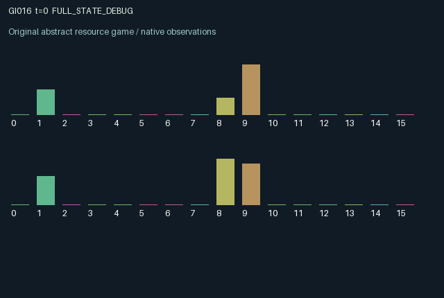

GI016 / LEGACY_ARRAY
astra-d2-00016: sequential signature escrow
2 agents5 actions16 observation columns32 original horizonRuntime: PASS
Release verification episode
Untrained uniform legal actions. Actual JAX state sampled along the full original episode; full-state debug camera. No human performance or learning claim.

Run this game
crucibles play --game 16
Start Python locally, then open the address printed by the terminal. Installation, multiplayer, takeover and keyboard controls →
Objective, rewards & ending
Exact task contract
{
"objective": "Accumulate original per-agent rewards under the interaction rules in mechanism.md.",
"natural_termination": "No early terminal; original t >= 32 horizon.",
"exact_transition_and_reward_source": "def raw_step(self, key, state, actions):\n wallet_start = jnp.minimum(state[\"wallet\"] + 0.03, 1.0)\n deposit = jnp.where(\n actions == 1,\n jnp.minimum(0.24, jnp.minimum(wallet_start, 0.60 - state[\"bond\"])),\n 0.0,\n )\n deposited_bond = state[\"bond\"] + deposit\n withdrawing = (actions == 4) & (deposited_bond > 0.0)\n forfeited = jnp.where(withdrawing, 0.50 * deposited_bond, 0.0)\n refunded = jnp.where(withdrawing, 0.50 * deposited_bond, 0.0)\n held = jnp.where(withdrawing, 0.0, deposited_bond)\n received = jnp.roll(forfeited, 1)\n wallet_available = jnp.clip(wallet_start - deposit + refunded + received, 0.0, 1.0)\n committed = jnp.all(held >= 0.20)\n work_spend = jnp.where(\n (actions == 2) & committed,\n jnp.minimum(wallet_available, 0.12),\n 0.0,\n )\n progress_worked = jnp.clip(\n 0.96 * state[\"progress\"] + 2.40 * jnp.sum(work_spend * state[\"efficiency\"]),\n 0.0,\n 1.0,\n )\n breach = jnp.any(withdrawing)\n settlement = jnp.all(state[\"signed\"]) & committed & ~breach\n active = jnp.any(held > 0.0)\n project_age = jnp.where(active, state[\"age\"] + 1, 0).astype(jnp.int32)\n expired = (project_age >= 8) & active & ~settlement\n signed = state[\"signed\"] | ((actions == 3) & (state[\"progress\"] >= 0.75) & committed)\n clearing = settlement | expired\n release = jnp.where(settlement, held, jnp.where(expired, 0.50 * held, 0.0))\n settlement_cash = jnp.where(settlement, 0.20 * state[\"value\"], 0.0)\n next_state = {\n \"t\": state[\"t\"] + jnp.array(1, dtype=jnp.int32),\n \"wallet\": jnp.clip(wallet_available - work_spend + release + settlement_cash, 0.0, 1.0),\n \"bond\": jnp.where(clearing, 0.0, held),\n \"value\": state[\"value\"],\n \"efficiency\": state[\"efficiency\"],\n \"progress\": jnp.where(clearing | breach, 0.0, progress_worked),\n \"signed\": jnp.where(clearing | breach | ~committed, False, signed),\n \"age\": jnp.where(clearing, 0, project_age).astype(jnp.int32),\n \"last_settlement\": settlement,\n \"last_breach\": breach,\n \"last_action\": actions.astype(jnp.int32),\n }\n outcome = jnp.where(settlement, 0.65 * (0.40 + 0.60 * state[\"value\"]), 0.0)\n transfers = 0.30 * (received - forfeited)\n costs = 0.25 * work_spend + 0.03 * deposit + jnp.where(expired, 0.35 * held, 0.0)\n rewards = jnp.clip(outcome + transfers - costs, -1.0, 1.0).astype(jnp.float32)\n done_all = next_state[\"t\"] >= 32\n dones = jnp.broadcast_to(done_all, (2,))\n info = {\"done_all\": done_all, \"legal_mask\": self.legal_actions(next_state)}\n return self.observe(next_state), next_state, rewards, dones, info"
}Declared per-step reward bounds: -1.0 to 1.0. Observability: source_defined.
Rules
Original mechanism document (historical status wording retained)
# astra-d2-00016: sequential signature escrow This is an original source proposal based on generic voluntary public production, escrow and staged ratification. It has no supplied parent. Similarity to those generic mechanisms is intentional; distinctness from other proposals or any benchmark has not been established. Each role has a private liquid wallet, private settlement value and private work efficiency. Bonds, project progress, project age, signatures and previous actions are public. Both roles must hold at least 0.20 in escrow before either can do productive work. An eligible signature is persistent, but settlement requires both signatures to have already existed at the beginning of a later transition. A last-step withdrawal therefore still prevents settlement and clears progress. Actions are 0 wait, 1 deposit up to 0.24 into an escrow cap of 0.60, 2 spend up to 0.12 on work when both are bonded, 3 sign a project whose previous progress is at least 0.75, and 4 withdraw one's bond. Withdrawal returns half the actor's bond and transfers the other half to the partner; it invalidates all signatures and progress. Eight active transitions without settlement expire the project, returning half each remaining bond and destroying the rest. Settlement returns both bonds and credits 0.20 times private value into each wallet. Wallets refill by 0.03 per transition and are capped at 1.0, so overflow is discarded. Work contributes through both private efficiencies to shared progress, with 0.96 retention each transition. Values, efficiencies and starting wallets are drawn only at reset. Other transitions are deterministic given actions. All actions remain legal; work, signing and withdrawal can have no special effect when their prerequisites are absent. This permits delayed commitment, unrewarded effort, asymmetric costs, and unsuccessful coordination. The reward before clipping is a settlement payoff of 0.65 * (0.40 + 0.60 * own_value), plus 0.30 times net forfeiture received, minus 0.25 times work spending, 0.03 times deposits and 0.35 times escrow held when it expires. Every reward is explicitly clipped to [-1, 1]. Liquid cash flows and scalar utility are distinct, as described above. No positive outcome is assumed. Observation columns 0 through 15 are: time/32; own wallet; own bond/0.60; partner bond/0.60; progress; own signature; partner signature; age/8; own value; own efficiency/1.20; previous settlement flag; previous breach flag; own previous action/4; partner previous action/4; both sufficiently bonded flag; and progress ready for signature flag. Partner wallet, value and efficiency are hidden. Each role can alter the partner's feasible work, project lifetime, settlement, or forfeiture receipts through persistent state. The intended interface is two agents, 16 float32 observations per agent, five actions and a 32-transition horizon. The terminal transition retains its state and observation. This artifact is source authoring only. Syntax parsing is the only author-side check; isolated engineering validation, duplicate review, mechanism qualification and learning outcomes remain unassessed.
Commands
0Wait
1Deposit bond
2Work on committed project
3Sign completed work
4Withdraw and forfeit half bond
Roles & abilities
agent_0 Original legacy agent; see mechanism and source
agent_1 Original legacy agent; see mechanism and source
Observation permissions
Training receives only the original observation rows. Role cameras use declared visibility; debug cameras are explicitly marked. Local benchmark records log debug exposure and role takeover history.
Exact observation layout
[
{
"slice": [
0,
16
],
"visibility": "exact original observe() below",
"source_code": "def observe(self, state):\n obs = jnp.zeros((2, 16), dtype=jnp.float32)\n obs = obs.at[:, 0].set(state[\"t\"] / 32.0)\n obs = obs.at[:, 1].set(state[\"wallet\"])\n obs = obs.at[:, 2].set(state[\"bond\"] / 0.60)\n obs = obs.at[:, 3].set(jnp.roll(state[\"bond\"], 1) / 0.60)\n obs = obs.at[:, 4].set(state[\"progress\"])\n obs = obs.at[:, 5].set(state[\"signed\"].astype(jnp.float32))\n obs = obs.at[:, 6].set(jnp.roll(state[\"signed\"], 1).astype(jnp.float32))\n obs = obs.at[:, 7].set(state[\"age\"] / 8.0)\n obs = obs.at[:, 8].set(state[\"value\"])\n obs = obs.at[:, 9].set(state[\"efficiency\"] / 1.20)\n obs = obs.at[:, 10].set(state[\"last_settlement\"].astype(jnp.float32))\n obs = obs.at[:, 11].set(state[\"last_breach\"].astype(jnp.float32))\n obs = obs.at[:, 12].set(state[\"last_action\"] / 4.0)\n obs = obs.at[:, 13].set(jnp.roll(state[\"last_action\"], 1) / 4.0)\n obs = obs.at[:, 14].set(jnp.all(state[\"bond\"] >= 0.20).astype(jnp.float32))\n obs = obs.at[:, 15].set((state[\"progress\"] >= 0.75).astype(jnp.float32))\n return obs"
}
]Entity visibility & attributes
[]
Actual verification & provenance
Per-game execution receipt
{
"game": "gi016",
"status": "PASS",
"verification_revision": 2,
"source_sha256": "d08703344e038b96273971d045312855c93aa2f9da5a7ad6a905716444dbe38b",
"seed": 20261101,
"runtime": {
"jax": "0.4.38",
"numpy": "1.26.4",
"devices": [
"TFRT_CPU_0"
]
},
"dimensions": {
"num_agents": 2,
"observation_size": 16,
"num_actions": 5,
"max_steps": 32
},
"checks": {
"eager_reset": {
"status": "PASS",
"seconds": 0.7280652523040771
},
"observation_spaces_legal_masks": {
"status": "PASS",
"seconds": 0.1328120231628418
},
"eager_step": {
"status": "PASS",
"seconds": 0.8242611885070801
},
"jit_reset": {
"status": "PASS",
"seconds": 0.206559419631958
},
"jit_step": {
"status": "PASS",
"seconds": 0.2788355350494385
},
"eager_jit_integer_parity_float_measurement": {
"status": "PASS",
"seconds": 0.0
},
"jit_vmap_reset": {
"status": "PASS",
"seconds": 0.24389362335205078
},
"jit_vmap_step": {
"status": "PASS",
"seconds": 0.3472104072570801
},
"outer_autoreset_api": {
"status": "PASS",
"seconds": 0.8110489845275879
},
"full_original_horizon_episode_and_render": {
"status": "PASS",
"seconds": 1.3459529876708984
}
},
"human_scores": null,
"browser_controls": "PENDING",
"failures": [],
"elapsed_seconds": 5.469315528869629,
"float_parity_max_abs": 1.1920928955078125e-07,
"numerical_parity": "UNDETERMINED_NONZERO_FLOAT_DIFFERENCE",
"raw_terminal_absorbing": "NOT_PART_OF_ORIGINAL_LEGACY_CONTRACT",
"terminal_outer_reset": "PASS",
"episode_steps": 32,
"scripted_random_returns": [
-0.2135999957099557,
-0.29279999900609255
],
"terminal": true,
"demo_information": "FULL_STATE_DEBUG",
"demo_frames": 33,
"render_roles_checked": 2
}Chromium control verification
{
"game": "gi016",
"status": "PASS",
"human_scores": null,
"engineering": true,
"checks": [
"catalog_selected_and_real_native_reset",
"dom_queue_and_native_step",
"second_participant_ownership_and_native_joint_step",
"all_roles_individually_controllable_no_role_cap",
"explicit_debug_camera",
"release_to_pure_ai_without_reset"
],
"ui_sha256": "15b5861d23b3c42811865c954d5a988280bbfd21cf8e93754be2437a027158c5",
"seconds": 5.453542470932007
}Original identity and file hashes
{
"id": 16,
"key": "gi016",
"title": "astra-d2-00016: sequential signature escrow",
"summary": "",
"tags": [],
"family": "legacy_array",
"dimensions": {
"num_agents": 2,
"observation_size": 16,
"num_actions": 5,
"max_steps": 32
},
"source_sha256": "d08703344e038b96273971d045312855c93aa2f9da5a7ad6a905716444dbe38b",
"manifest_sha256": "23194d77ae0e4d59abbd0d0a2c15e542862133e12b9fcc207b1272fd61f430b8",
"files": [
{
"file": "candidate.py",
"sha256": "d08703344e038b96273971d045312855c93aa2f9da5a7ad6a905716444dbe38b",
"bytes": 5044,
"origin": "work/exp_2/astra_generation/discovery_v2/initial/candidate_00016/attempt_00/candidate.py"
},
{
"file": "mechanism.md",
"sha256": "8a6c9c9f3de4388ffc448f177ca61e18b4b4049420798936dd2200a79aca8f1e",
"bytes": 3152,
"origin": "work/exp_2/astra_generation/discovery_v2/initial/candidate_00016/attempt_00/mechanism.md"
}
],
"original_status": "LEGACY_SOURCE",
"original_saved_replay": false,
"release_validation": "PASS",
"human_scores": null,
"browser_validation": "PASS"
}